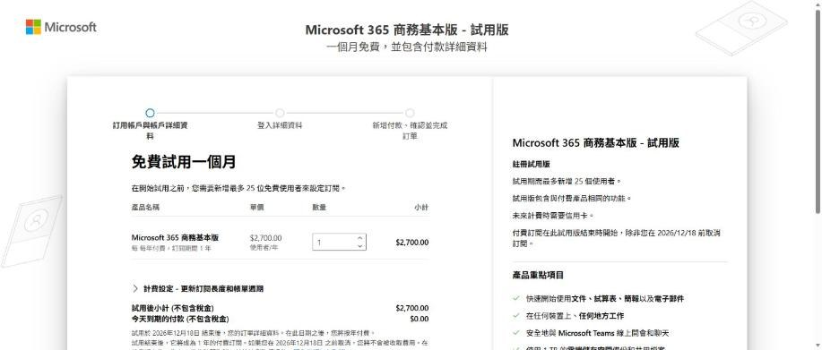
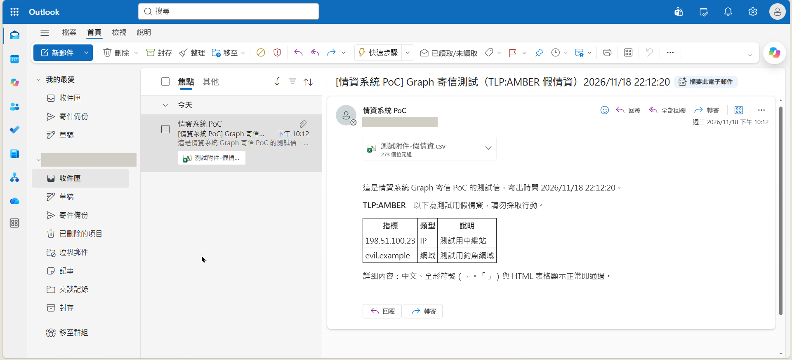
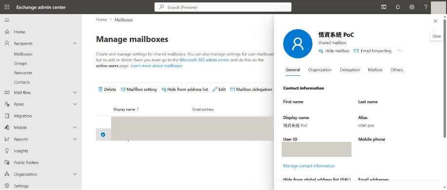
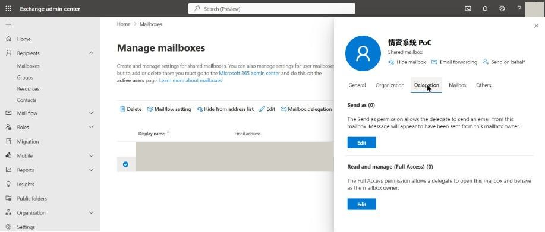
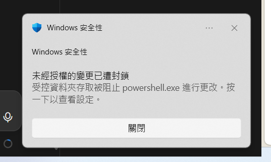
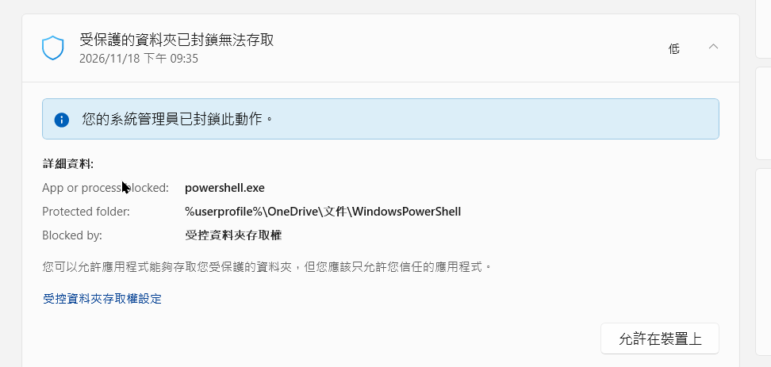

用 Java 透過 Graph 寄信讀信，權限只開一個信箱
Exchange Online 已經停用 IMAP／POP 的帳號密碼登入，用 JavaMail 帳密讀信的舊程式都得改。這份紀錄從申請 Microsoft 365 試用版開始，一步步做到 Java 8 程式以「應用程式身分」寄信、讀外部來信、解析中文內容、搬到「已處理」資料夾，而且權限只限一個專用信箱，其他信箱一律被拒絕。所有指令、程式片段、截圖與踩過的坑都在這裡。
一句話：程式自己有身分，權限只到一個信箱
在 Entra ID 註冊一個應用程式、拿一組用戶端密碼；程式用它換 token，再帶 token 呼叫 Microsoft Graph 寄信讀信。能碰哪些信箱，由 Exchange 的「應用程式角色指派」限定在一個專用信箱。
帳密登入走不通了
Exchange Online 自 2022 年 10 月起停用 IMAP／POP 帳密登入，無法重新開啟；SMTP 帳密寄信也已宣布停用，目前暫緩到 2026 年底。
寄、讀、解析、搬移
Java 8（Domino 11 的 JVM 版本）只用 JDK 內建的 HTTP 與 JavaMail，不另掛 HTTP／JSON 函式庫。
只授權一個信箱
用 Exchange RBAC for Applications 限定範圍，並以反向測試確認：同一個應用程式去讀寫其他信箱，回 403 存取被拒。
類比：外包廠商的識別證與門禁
把程式想成一位常駐的外包人員，進大樓要識別證、進房間要門禁。
| 這份 PoC 的東西 | 類比 | 說明 |
|---|---|---|
| Entra 應用程式註冊 | 外包人員的人事資料 | 證明「有這個人」，本身不給任何房間的權限 |
| 用戶端密碼 | 識別證晶片 | 拿它去換當天的通行證；有到期日，外流就能被冒用 |
| token | 當天的臨時通行證 | 約 1 小時有效，到期再換一張 |
| Exchange 角色指派＋管理範圍 | 門禁只開一間房 | 決定這個人能進哪幾個信箱；這份 PoC 只開 intel-poc |
| Entra 的 Graph Mail.* 應用程式權限 | 萬能鑰匙 | 整棟樓所有房間都能進；方便，但不建議（見第 05 段） |
核心模型：誰跟誰講話、權限從哪來
程式只跟兩個 Microsoft 雲端端點溝通，全部走 HTTPS 443；主機只需要對外連出，不用開任何對內的 port。
兩種授權方式比較
| Exchange 角色指派（RBAC for Applications） | Entra 的 Graph 應用程式權限 | |
|---|---|---|
| 範圍 | 可限定到指定信箱（管理範圍） | 整個租用戶所有信箱 |
| 在哪設定 | Exchange Online PowerShell（沒有網頁介面） | Entra 系統管理中心網頁，勾選後授與管理員同意 |
| token 裡看得到 | 看不到（roles 是空的） | 看得到 Mail.ReadWrite、Mail.Send |
| 生效時間 | 指派後 30 分鐘到 2 小時；新租用戶可能更久 | 幾乎立即 |
| 這份 PoC | 正式採用，並通過反向測試 | 只在角色指派卡住時暫時用過，之後撤銷並移除 |
一步步做
7 步以下指令都在 Windows PowerShell 5.1 驗證過。範例值：租用戶 contoso.onmicrosoft.com、管理員 admin@contoso.onmicrosoft.com、專用信箱 intel-poc@contoso.onmicrosoft.com、應用程式名稱 IntelPoc Graph，請換成你自己的。點截圖可放大。
需要的東西
| Microsoft 365 租用戶 | 這份用商務基本版（Business Basic）試用，一個月免費；要有全域管理員帳號 |
| PowerShell 模組 | ExchangeOnlineManagement（設定 Exchange 用）。Entra 段用 Invoke-RestMethod 直接呼叫 REST，不需要 Microsoft.Graph 模組 |
| Java | JDK 8（要和 Domino 11 的 JVM 版本一致） |
| JavaMail | javax.mail.jar（1.4 以上即可，只用來解析 MIME；這份用 1.6.2） |
| 網路 | 主機能對外連 443：login.microsoftonline.com、graph.microsoft.com |
申請 Microsoft 365 商務基本版試用
- 選「商務」類別的商務基本版；個人／家用版沒有 Entra ID 與 Exchange 系統管理功能，做不了
- 聯絡信箱用個人信箱即可；不要用公司信箱，公司網域若已有 Microsoft 365，試用可能被加進公司的租用戶
- 網域名稱（xxxx.onmicrosoft.com）建立後不能改，取個看得出是測試用的名字
- 試用期滿會自動轉成付費年約，記下到期日，在系統管理中心 → 帳單 → 您的產品取消
- 第一次登入會要求設定多重要素驗證（Microsoft Authenticator）

Entra：註冊應用程式、建立服務主體、產生用戶端密碼
- 用「代碼登入」：畫面顯示一組代碼，到
https://login.microsoft.com/device輸入後用全域管理員登入。比跳出登入視窗穩定（內嵌終端機裡，Windows 的登入視窗常被藏到其他視窗後面） - 用 Microsoft 官方的公用用戶端「Microsoft Graph Command Line Tools」（
14d82eec-204b-4c2f-b7e8-296a70dab67e）代表管理員操作；第一次登入要勾「代表您的組織同意」 - 不要在這個應用程式上加 Graph 的 Mail.* 應用程式權限（理由見第 03 段）
- 用戶端密碼只會在建立當下回傳一次，直接寫進設定檔，不要印在畫面上
$clientId = "14d82eec-204b-4c2f-b7e8-296a70dab67e" # Microsoft Graph Command Line Tools $scope = "https://graph.microsoft.com/Application.ReadWrite.All https://graph.microsoft.com/Domain.Read.All" $dc = Invoke-RestMethod -Method Post -Uri "https://login.microsoftonline.com/organizations/oauth2/v2.0/devicecode" ` -Body @{ client_id = $clientId; scope = $scope } Write-Host "到 $($dc.verification_uri) 輸入代碼：$($dc.user_code)" do { Start-Sleep -Seconds $dc.interval try { $tok = Invoke-RestMethod -Method Post -Uri "https://login.microsoftonline.com/organizations/oauth2/v2.0/token" -Body @{ grant_type = "urn:ietf:params:oauth:grant-type:device_code"; client_id = $clientId; device_code = $dc.device_code } } catch { $err = ($_.ErrorDetails.Message | ConvertFrom-Json).error if ($err -ne "authorization_pending") { throw } # 還沒登入完就繼續等 } } until ($tok) $headers = @{ Authorization = "Bearer $($tok.access_token)" }
# Windows PowerShell 5.1 送字串 body 會用 ISO-8859-1，中文會壞，所以轉成 UTF-8 bytes function Invoke-Graph($method, $uri, $body) { if ($null -eq $body) { return Invoke-RestMethod -Method $method -Uri "https://graph.microsoft.com$uri" -Headers $headers } $bytes = [Text.Encoding]::UTF8.GetBytes(($body | ConvertTo-Json -Depth 5)) Invoke-RestMethod -Method $method -Uri "https://graph.microsoft.com$uri" -Headers $headers ` -Body $bytes -ContentType "application/json; charset=utf-8" } $app = Invoke-Graph POST "/v1.0/applications" @{ displayName = "IntelPoc Graph"; signInAudience = "AzureADMyOrg" } $sp = Invoke-Graph POST "/v1.0/servicePrincipals" @{ appId = $app.appId } # 剛建立的應用程式可能要等幾秒才查得到，失敗就重試 $end = (Get-Date).AddMonths(6).ToUniversalTime().ToString("yyyy-MM-ddTHH:mm:ssZ") $cred = Invoke-Graph POST "/v1.0/applications/$($app.id)/addPassword" @{ passwordCredential = @{ displayName = "graph-poc"; endDateTime = $end } } # $cred.secretText 只會出現這一次：直接寫進設定檔（變數別取名 $pwd，那是 PowerShell 內建的目前目錄） # 記下 $app.appId（應用程式識別碼）與 $sp.id（服務主體的物件識別碼），下一步要用

Exchange：共用信箱、管理範圍、角色指派
- Windows PowerShell 5.1 的
Connect-ExchangeOnline沒有-Device：同樣用代碼登入拿 token（公用用戶端改成 Exchange Online PowerShellfb78d390-0c51-40cd-8e17-fdbfab77341b，scope 為https://outlook.office365.com/.default），再用-AccessToken連線 - 新租用戶第一次要
Enable-OrganizationCustomization才能建自訂管理範圍 - 專用信箱用共用信箱：不需要授權、沒有密碼、不能直接登入
New-ServicePrincipal的-ObjectId要填企業應用程式（服務主體）的物件識別碼，不是應用程式註冊頁上的那個，這裡最常填錯
Connect-ExchangeOnline -AccessToken $exoToken -UserPrincipalName admin@contoso.onmicrosoft.com -ShowBanner:$false
if ((Get-OrganizationConfig).IsDehydrated) { Enable-OrganizationCustomization } # 新租用戶才需要
New-Mailbox -Shared -Name intel-poc -Alias intel-poc -DisplayName "情資系統 PoC" `
-PrimarySmtpAddress intel-poc@contoso.onmicrosoft.com
New-ServicePrincipal -AppId <AppId> -ObjectId <服務主體物件識別碼> -DisplayName "IntelPoc Graph"
New-ManagementScope -Name IntelPocMailbox `
-RecipientRestrictionFilter "PrimarySmtpAddress -eq 'intel-poc@contoso.onmicrosoft.com'"
New-ManagementRoleAssignment -Name IntelPoc-Mail.Send -App <AppId> -Role "Application Mail.Send" -CustomResourceScope IntelPocMailbox
New-ManagementRoleAssignment -Name IntelPoc-Mail.ReadWrite -App <AppId> -Role "Application Mail.ReadWrite" -CustomResourceScope IntelPocMailbox
Test-ServicePrincipalAuthorization -Identity <AppId> -Resource intel-poc@contoso.onmicrosoft.com
RoleName GrantedPermissions InScope -------- ------------------ ------- Application Mail.Send Mail.Send True Application Mail.ReadWrite Mail.ReadWrite True
TenantAdmins_xxx 群組），是委派權限還沒同步。這份 PoC 當晚失敗、隔天重跑就成功，等就對了。Java：取 token、寄信、列信、取原始 MIME、搬移
- 只用
HttpURLConnection；JSON 用一支百來行的小解析器，不另掛 jar（Domino 上加 jar 很麻煩） - 明確指定 TLS 1.2（IBM J9 的 "TLS" 預設不一定含 1.2）；憑證信任沿用 JVM 的 cacerts，不要做「全部信任」
- token 快取到到期前 5 分鐘；遇到 429／503 依
Retry-After重試；遇到 401 丟掉 token 重拿一次 - 一定要設定 Accept 標頭：
HttpURLConnection預設的 Accept 含有單獨的*，Graph 的讀取請求會回 406（寄信不檢查，所以很難發現） - 讀信不用 Graph 的 JSON 內文，而是取原始 MIME 交給 JavaMail 解析：舊程式解析
javax.mail.Message的邏輯幾乎不用改
String form = "client_id=" + enc(clientId)
+ "&client_secret=" + enc(clientSecret)
+ "&scope=" + enc("https://graph.microsoft.com/.default")
+ "&grant_type=client_credentials";
// POST https://login.microsoftonline.com/{tenantId}/oauth2/v2.0/token
// 回應的 access_token 與 expires_in 存起來，到期前 5 分鐘內才重新申請
HttpURLConnection c = (HttpURLConnection) new URL(url).openConnection(proxy);
if (c instanceof HttpsURLConnection) {
SSLContext ctx = SSLContext.getInstance("TLSv1.2");
ctx.init(null, null, null); // 沿用 JVM 的 cacerts
((HttpsURLConnection) c).setSSLSocketFactory(ctx.getSocketFactory());
}
c.setRequestMethod(method);
c.setRequestProperty("Accept", url.contains("/$value") ? "*/*" : "application/json"); // 少了這行，GET 會 406
c.setRequestProperty("Authorization", "Bearer " + getAccessToken());
// 不要用 setFixedLengthStreamingMode：串流模式下遇到 401，JDK 會丟掉回應內容，讀不到 AADSTS 錯誤說明
int status = c.getResponseCode();
if (status == 429 || status == 503 || status == 504) { /* 依 Retry-After 等待後重試，最多 3 次 */ }
if (status == 401) { /* 丟掉快取的 token、重拿一次再試 */ }
| 動作 | 端點 | 重點 |
|---|---|---|
| 寄信 | POST /users/{信箱}/sendMail | body 為 JSON，HTML 內文、附件用 base64（合計約 3MB 以內）、saveToSentItems: true；成功回 202 |
| 列信 | GET /users/{信箱}/mailFolders/inbox/messages | $select 只取需要的欄位；$orderby=receivedDateTime asc 由舊到新；跟著 @odata.nextLink 翻頁 |
| 只讀未讀 | 加 $filter=receivedDateTime ge 1900-01-01T00:00:00Z and isRead eq false | $orderby 的欄位必須先出現在 $filter 裡，否則回 InefficientFilter |
| 取原始信 | GET /users/{信箱}/messages/{id}/$value | 回傳 RFC 822 MIME，交給 new MimeMessage(session, inputStream) |
| 找／建資料夾 | GET /mailFolders?$filter=displayName eq '情資已處理'；沒有就 POST /mailFolders | 中文資料夾名稱沒問題；單引號要寫成兩個 |
| 搬移 | POST /users/{信箱}/messages/{id}/move | body {"destinationId": "資料夾 id"}；搬移後信件 id 會變 |
{
"message": {
"subject": "[情資系統 PoC] Graph 寄信測試（TLP:AMBER 假情資）",
"body": { "contentType": "HTML", "content": "<p>……</p>" },
"toRecipients": [ { "emailAddress": { "address": "someone@contoso.com" } } ],
"attachments": [ {
"@odata.type": "#microsoft.graph.fileAttachment",
"name": "測試附件-假情資.csv", "contentType": "text/csv", "contentBytes": "77u/5oyH5qiZLC..."
} ]
},
"saveToSentItems": true
}
MimeMessage msg = new MimeMessage(Session.getInstance(new Properties()), new ByteArrayInputStream(raw)); String subject = msg.getSubject(); // RFC 2047 中文主旨自動解碼 // multipart/alternative 先取 text/plain，沒有才把 HTML 轉成文字（有 jsoup 就用 jsoup） // 附件檔名：Outlook 常用 =?UTF-8?B?...?= 編碼，JavaMail 1.4 不會自動解，要 MimeUtility.decodeText(part.getFileName())
測試：寄信、讀信解析、外部來信、搬移
- 專用信箱寄一封給自己，再讀出來解析：中文主旨、HTML 表格、中文檔名附件
- 從 Gmail 等外部信箱寄信進來：會直接進收件匣（這份實測沒有被當成垃圾郵件）；Gmail 的信同時有純文字與 HTML，取純文字那份
- 處理完搬到「情資已處理」，收件匣清空
- 只用自編的假資料測試（IP 用文件保留的 198.51.100.0/24、網域用 example），不要把真實資料放進試用租用戶
== 1. 取得 token 取得 token 成功，約 59 分鐘後到期 token 內的權限（roles）：無（用 Exchange 角色指派時本來就是空的） == 2. 寄測試信（中文主旨、HTML 表格、中文檔名附件） 已由 intel-poc@contoso.onmicrosoft.com 寄出測試信 == 3. 列出收件匣 intel-poc@contoso.onmicrosoft.com 收件匣 1 封（由舊到新） == 4. 讀信並解析 附件：[測試附件-假情資.csv] 內文：TLP:AMBER 以下為測試用假情資，請勿採取行動。 指標 類型 說明 198.51.100.23 IP 測試用中繼站 申請 token 1 次 > process 已搬到「情資已處理」 > list intel-poc@contoso.onmicrosoft.com 收件匣 0 封

反向測試：確認碰不到其他信箱
- 複製一份設定檔，只把信箱改成別的（這份用管理員信箱），其他不動；測完就刪掉這份暫時設定檔
- 讀與寫都應該回 403。這一步是「權限真的只限一個信箱」的證據，跟主管或廠商說明時最有說服力
> list（admin@contoso.onmicrosoft.com 的收件匣） 失敗：HTTP 403 ErrorAccessDenied：Access is denied. > send（以 admin@contoso.onmicrosoft.com 寄出） 失敗：HTTP 403 ErrorAccessDenied：Access is denied.
讓管理員在 Outlook 網頁版看共用信箱
- 共用信箱不能直接登入；在 Exchange 系統管理中心 → Mailboxes → 點共用信箱 → Delegation → Read and manage (Full Access) → Edit → Add members → 選管理員 → Save → Confirm
- 開啟網址
https://outlook.office.com/mail/intel-poc@contoso.onmicrosoft.com/，或在自己信箱左側「新增共用資料夾或信箱」 - Microsoft 說 5 分鐘內生效，新租用戶實際上隔天才打得開；剛設定完會看到 AccessDenied 錯誤頁，不是設定錯
- 系統管理中心第一次開會跳新手導覽，遮罩可能擋住點擊，重新整理頁面即可




常見誤解
6 個邊界：什麼時候不適用、什麼時候會壞
照著做之前先看這段，避免把這份 PoC 的結論套到它沒驗證過的地方。
會壞用戶端密碼到期
最長 24 個月（建議 12 個月內）。到期後拿不到 token，寄信與讀信同時停擺（AADSTS7000222）。可同時掛兩組，到期前換新的再刪舊的；失敗通知不能也走 Graph。
會壞大附件
sendMail 單次請求約 4MB 上限（base64 後會變大），這份 PoC 超過 3MB 直接拒絕；更大的要改用上傳工作階段（upload session）。
要注意收件者必須是 email 地址
Graph 不認 Notes 階層名稱（CN=xxx/O=xxx）。舊系統若寄給 Notes 名稱或群組，要先轉成 internet address，群組要改用 Exchange 通訊群組。
要注意權限生效有延遲
角色指派 30 分鐘到 2 小時；剛建立的租用戶，角色指派與共用信箱存取都要等到隔天。排測試時程要預留。
要注意proxy 與 SSL 解密
主機若經 proxy 且做 SSL 解密檢查，Java 要另外信任 proxy 的根憑證；條件式存取若限制來源 IP，應用程式登入也會被擋。
未驗證Domino 11 實機
程式是 Java 8 位元碼，用 Domino 12 的 JVM（OpenJ9）測過 TLS 連線，但還沒放進 Domino 11 的 agent 實跑；MIME 轉 Notes 文件的部分只寫好、未實測。
未驗證憑證登入
這份用用戶端密碼。改用憑證要在 token 請求加上簽章（client assertion），Java 8 內建可做，但還沒寫。
環境Windows PowerShell 5.1
Microsoft.Graph 模組登入會出 EventSourceException、Connect-ExchangeOnline 沒有 -Device。這份都改用 REST 代碼登入繞過；能用 PowerShell 7 會單純很多。
想更深入
踩坑清單、密碼與憑證、IMAP 路線、程式結構與指令速查，需要時再展開。
踩坑清單：8 個問題的原因與解法（含 Windows Defender 擋寫入、按錯「不是我」等）
| 問題 | 原因 | 解法 |
|---|---|---|
| 程式Graph 讀取請求回 406 | HttpURLConnection 預設 Accept 是 text/html, image/gif, image/jpeg, *; q=.2, */*; q=.2，單獨的 * 不合法 | 明確設定 Accept：一般 application/json，取 $value 用 */* |
| 程式401 時讀不到錯誤說明 | 串流模式（setFixedLengthStreamingMode）下遇到 401，JDK 會丟掉回應內容 | 不用串流模式，單次請求本來就在 4MB 內 |
| 微軟Exchange 角色指派被拒 | 新租用戶剛啟用組織自訂，委派權限還沒同步 | 等，隔天重跑；腳本做成可重複執行，已建好的項目會略過 |
| 微軟Connect-MgGraph 出 EventSourceException | Microsoft.Graph 模組在 Windows PowerShell 5.1 的問題 | 不用這個模組，改 Invoke-RestMethod 直接呼叫 REST |
| 微軟Connect-ExchangeOnline 沒有 -Device | 5.1 版的限制 | 自己用代碼登入拿 token，再 -AccessToken -UserPrincipalName |
| 環境登入視窗找不到 | 內嵌終端機裡，Windows 帳戶登入視窗（WAM）被藏到後面 | 改成代碼登入 |
| 環境Windows Defender 擋寫入「文件」 | 「文件」在 OneDrive 且受「受控資料夾存取權」保護，PowerShell 想寫 文件\WindowsPowerShell 被擋；舊版 PowerShellGet 因此裝不了模組 | 不需要允許：用 Save-Module 把模組存到專案資料夾，只在執行腳本時加進 PSModulePath |
| 環境登入時按到「這不是我」 | 該次代碼登入被記為拒絕（authorization_declined） | 重新發出登入請求，不影響帳號安全 |


用戶端密碼與憑證怎麼選、怎麼不停機更換
| 用戶端密碼 | 憑證 | |
|---|---|---|
| 是什麼 | Entra 產生的一串密碼字串 | 數位憑證，Entra 上只放公開金鑰 |
| 放在哪 | 主機上的設定檔 | 私密金鑰留在主機，不離開主機 |
| 有效期限 | 最長 24 個月，建議 12 個月內 | 依憑證本身，常見 1～3 年 |
| 安全性 | 普通，字串外流就能冒用 | 較高，Microsoft 推薦 |
| 交付 | 要把密碼交給開發方，需約定安全的交付方式 | 開發方自己產生，只把公開金鑰交出去上傳 |
如果一定要用 IMAP：要多做的事（5 項對照）
| 項目 | Graph（這份的做法） | IMAP |
|---|---|---|
| 應用程式註冊 | 要 | 一樣要 |
| 權限 | Exchange 角色指派，只限專用信箱 | Entra 加 IMAP.AccessAsApp 並由系統管理員同意，再 New-ServicePrincipal＋Add-MailboxPermission |
| 信箱設定 | 不用另外開 | 確認信箱有開 IMAP（Get-CASMailbox 的 ImapEnabled） |
| 防火牆 | 443 | 443（取 token）＋ 993（outlook.office365.com） |
| 寄信 | 同一個應用程式 | 另外處理：SMTP＋OAuth（SMTP.SendAsApp），或 Exchange 連接器依來源 IP 轉送 |
JavaMail 用 IMAP＋OAuth：需要 1.5.5 以上，設定 mail.imap.auth.mechanisms=XOAUTH2，密碼位置改傳 token（scope 為 https://outlook.office365.com/.default）。
程式結構：每個類別負責什麼
| 類別 | 負責 | 放在 Domino 的哪裡 |
|---|---|---|
| GraphConfig | 讀 properties 設定檔（UTF-8）：租用戶、應用程式、密碼、信箱、資料夾名稱、proxy、逾時 | Java script library |
| MiniJson | 百來行的 JSON 解析與輸出，免掛 jar | Java script library |
| GraphMailClient | token 快取、寄信、列信（翻頁）、取 MIME、找／建資料夾、搬移；429／503 重試、401 重拿 token | Java script library |
| MailText | MIME 轉純文字、附件檔名解碼；有 jsoup 就用 jsoup 轉 HTML | Java script library |
| GraphNotes | 把 MIME 逐層重建成 Notes 文件的 MIME Body，另存純文字欄位（未實測） | Java script library |
| GraphSendAgent／GraphReadAgent | 寄信測試、讀信轉 Notes 文件並搬移 | Java agent（執行安全層級 2） |
| GraphPocCli | 命令列工具：token、send、list、read、process，不需要 Notes | 本機或伺服器命令列 |
Domino agent 需要「執行安全層級 2（允許受限制的作業）」才能連網路與讀設定檔，簽署者要在伺服器文件的「Sign or run restricted LotusScript/Java agents」裡。
命令列工具與常用指令速查
java -jar graph-poc.jar graph-poc.properties token # 取 token，顯示到期時間與 token 內的權限 java -jar graph-poc.jar graph-poc.properties send [收件者] # 寄測試信（中文主旨、HTML 表格、中文檔名附件） java -jar graph-poc.jar graph-poc.properties list # 列收件匣（由舊到新） java -jar graph-poc.jar graph-poc.properties read .\out # 讀信解析、原始信存成 .eml，不搬移 java -jar graph-poc.jar graph-poc.properties process .\out # 讀信解析後搬到「已處理」資料夾 Get-ManagementRoleAssignment -Identity IntelPoc-Mail.Send # 查某個角色指派（依建立時取的名稱） Test-ServicePrincipalAuthorization -Identity <AppId> -Resource <信箱> # 查某信箱是否在範圍內
tenantId=00000000-0000-0000-0000-000000000000 clientId=00000000-0000-0000-0000-000000000000 clientSecret=（只寫在主機上，限制只有服務帳號能讀） mailbox=intel-poc@contoso.onmicrosoft.com processedFolder=情資已處理 unreadOnly=false maxMessages=20 #proxyHost= #proxyPort=8080
若要導入正式環境：請 Exchange 管理者做的設定與交付的值
| # | 項目 | 說明 |
|---|---|---|
| 1 | 應用程式註冊 | 單一租用戶；不要加 Graph 的 Mail.* 應用程式權限 |
| 2 | 用戶端密碼或憑證 | 講好有效期限與到期前由誰更新；密碼不要用 email 明文傳 |
| 3 | 專用信箱 | 建議共用信箱 |
| 4 | Exchange 服務主體、管理範圍、角色指派 | 同步驟 3；指派要用 Organization Management 成員的帳號，指派後 30 分鐘到 2 小時生效 |
| 5 | 防火牆與 proxy | 主機對外 443：login.microsoftonline.com、graph.microsoft.com |
| 6 | 交付的值 | 租用戶識別碼、應用程式識別碼、密碼（或改用憑證則不用傳）、密碼到期日、專用信箱地址、系統通知的寄件者地址 |